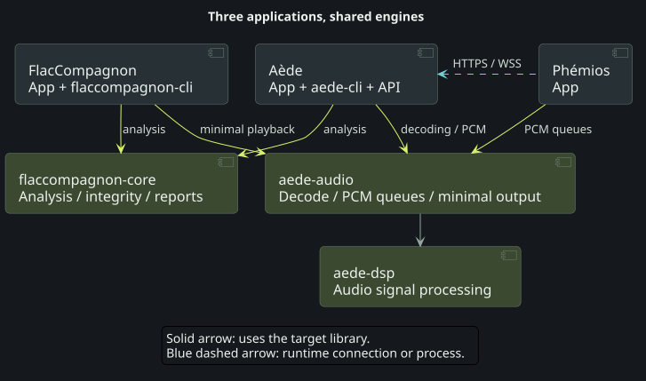

FlacCompagnon checks audio quality and integrity. Aède organizes the music catalogue, its metadata and access, and supplies server and playback services. Phémios is the interface for exploring the library and listening to music.
Their Rust crates share two foundations: flaccompagnon-core for analysis, and aede-audio / aede-dsp for audio playback primitives. The overview shows these reuse boundaries; the three expandable diagrams below show each application's own components.
At a glance#



- Green arrows identify libraries reused across projects. The two shared audio crates are maintained in Aède; the analysis crate is maintained in FlacCompagnon.
- Solid arrows point to the library used. The overview groups application roles rather than enumerating every Cargo dependency.
- Blue dashed arrows describe runtime communication. Phémios talks to Aède over HTTPS/WSS, with either an embedded local engine or a separate server.
Inside each application#
FlacCompagnon — analyze and inspect#
flaccompagnon is the desktop App; flaccompagnon-cli is the command-line analyzer. They use flaccompagnon-core, while flaccompagnon-services owns tag editing, conversions and file organization.
The App uses aede-audio/output for minimal local playback, without an Aède server/account, normalization or crossfade. Its core also uses aede-audio/decode for playback helpers. Actual analysis keeps its own original-precision decoding and measurements: preview processing does not alter analysis results.


Aède — catalogue, server and playback#
aede-core owns the catalogue, credits and persistence. It works with aede-accounts for account rules, aede-moods for explainable atmosphere selection, and FlacCompagnon's analysis library. aede-server exposes the API and uses aede-devices for network players. aede-cli orchestrates commands and can run the server.
aede-audio supplies progressive decoding and bounded PCM handoff; aede-dsp owns shared signal-processing algorithms. The desktop console has its own crates, aede-desktop and aede-desktop-core: it launches the engine executable as a child process instead of implementing a second server.


Phémios — explore and listen#
phemios is the Tauri desktop shell. phemios-core owns native orchestration and playback integration, using the shared aede-audio/queue primitives. phemios-cd supplies local audio-CD and CUE-image playback; phemios-transfer handles portable-device transfers.
The Aède API connection is distinct from crate reuse. For library playback, Phémios receives Aède-processed PCM and retains its client output/transport responsibilities; it does not normalize the same stream a second time. Local CD playback does not require an Aède login.


A shared foundation, selected features#
aede-audio has no default feature. decode adds progressive decoding; dsp exposes the DSP; queue adds bounded PCM handoff; output combines those primitives for a minimal device player. Consumers select the profile they need. Sharing a crate does not enable every Aède playback feature in every application.
Native client build preparation selects a published stable Aède release and records its exact revision. Raw Cargo commands use the existing pin. The diagrams describe the current source architecture, not a guarantee that independently built applications resolve identical versions.
These diagrams cover all 18 production crates across the three repositories, including Aède's independent desktop workspace. Third-party dependencies, build/dev dependencies and the phemios-glib-regression test crate are omitted. The diagrams do not certify physical-device compatibility.
For feature boundaries and update rules, read the shared audio foundation. Continue with the server App or the native API.